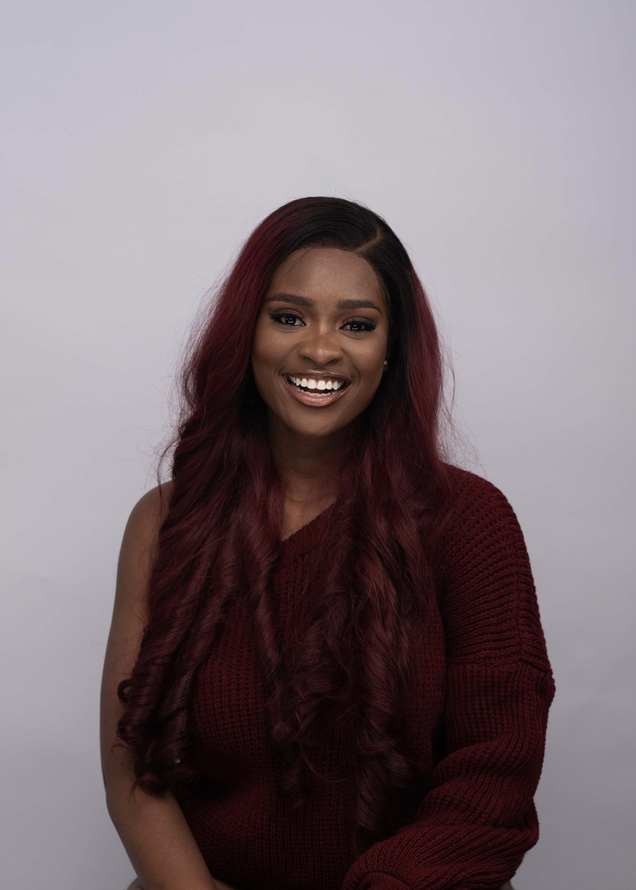

Operations Leader · Founder · Writer
I'm the person founders call when the idea is working and the business hasn't caught up yet.
I'm Favour. I run operations at a cross-border payments company, advise founders through my firm FONO, and write about the human side of ambition. My work is the unglamorous middle: the structure, routines and people that let a good idea become a business that lasts.

I take ideas, businesses, teams and messy situations, and make them work better.
The record
Some of what that has looked like.
Companies, clients and institutions
MightyDNI PaygampKaduna State GovernmentPTDFLagos LigaTechUnwind FestNational MSME ConferenceTOS GroupEarnaIMAGIOGatewood Consulting
What I do
One person, four ways of doing the same job.
Running a business, advising one, writing about the people in it, and teaching what I learn. Pick where you'd like to start.
01
Operations
I run the operating side of a fintech that moves money across borders.
See the work →02
Advisory
Through FONO, I help founders get their business working as well as their idea does.
About FONO →03
Writing
Unconventional ideas about people, work, love and faith, read by thousands.
Read my ideas →04
Speaking
Talks, panels and classes on operations, leadership, careers and storytelling.
Speaking & teaching →Experience
Where I've done the work.
MSc Business and Management, Aston University · BSc Microbiology, Federal University of Agriculture, Abeokuta · Operations Management, University of Pennsylvania (online) · McKinsey Forward Program
More about me- Dec 2025 – now
Operations Lead · Mighty
I run operations for a B2B fintech moving money across borders: the trade desk, treasury, client onboarding with compliance, and the weekly rhythm that keeps it all accountable.
- 2023 – now
Founder · FONO Consulting
An advisory firm for founders. We work on how a business is run, priced and grown. 18 engagements so far, from startups to state governments.
- Aug 2023 – now
Business Development Manager · DNI Pay
Built the company's structure, policies, hiring and budgets from the beginning, and the operations behind its live payments product.
- Jan – Jul 2024
Marketing Communications Specialist · gamp
Led a team of four and kept cross-functional projects moving with clear schedules and weekly check-ins.
- 2022 – 2023
Co-founder · Krieit Kulture
Wrote the business plan, raised early capital and launched a new product line.
- 2022 – 2023
Business Analyst · Gatewood Consulting
Gap analysis, market research and launch plans for clients.
- Jan – Jun 2021
Operations Manager · EastPro Logistics
Daily operations, scheduling, P&L reviews and hiring on site.
- 2019 – 2020
Protocol Assistant · National Defence College
Protocol for senior government officials and foreign dignitaries.
In their words
What working with me is like.
“I knew you were good at your stuff, but I saw how that competence got matched with personality, character and street depth. You couldn't have impressed me more.”
“Working with Favour was honestly one of the best decisions I made for my personal brand. She doesn't just know what to do, she gets it done swiftly and with so much precision.”
“I have worked with many people for two years, but these few months with you were one of the best times I've had with a staff. You are very intelligent, and I love how you connect all things.”
How I work
Three habits I don't compromise on.
I write things down.
Work you can't explain is work that can't be repeated. I document what was done, why, and what happened, so the next person doesn't start from zero.
I talk early and often.
Most problems I've fixed were communication problems first. Plans only work when the people carrying them understand them.
I let tools do the boring parts.
Automation and AI should give people their time back for the work that needs judgement.